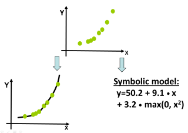

FFX: Massively Shallow Learning

FFX is a technique for symbolic regression, to induce whitebox models given X/y training data. It does Fast Function Extraction. It is:
- Fast - runtime 5-60 seconds, depending on problem size (1GHz cpu)
- Scalable - 1000 input variables, no problem!
- Deterministic - no need to "hope and pray".
If you ignore the whitebox-model aspect, FFX can be viewed as a regression tool. It's been used this way for thousands of industrial problems with 100K+ input variables. It can also be used as a classifier (FFXC), by wrapping the output with a logistic map.
The original FFX project work was 2011-2013. It was embedded in Solido software and since then, used successfully on thousands of industrial problems.
Technical details:
Open-source Code:
- See github.com/trentmc/ffx2011
- FFX.py implements FFX algorithm, and runffx.py is a testing toolkit. License.
- Dependencies - python (2.5, 2.6, and 2.7 work), numpy/scipy (0.9.0 works), scikit-learn (0.8 works)
- (Alt open source code: natekupp/ffx. Derived from v1.3. 2012-2021. 🙏 Nathan Kupp.)
Real-world test datasets:
- 6 Medium-dim. problems: ALL (36K)
- 12 High-dim. problems: Part1 (17M), Part2 (14M), Part3 (14M)
Representative papers:
[1] T. McConaghy, FFX: Fast, Scalable, Deterministic Symbolic Regression Technology, Genetic Programming Theory and Practice IX, Edited by R. Riolo, E. Vladislavleva, and J. Moore, Springer, 2011.
[2] T. McConaghy, High-Dimensional Statistical Modeling and Analysis of Custom Integrated Circuits, Proc. Custom Integrated Circuits Conference, Sept. 2011